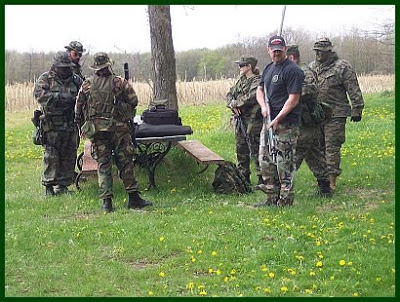

Crackdown: State troopers seal off a road as the Feds conduct a tri-state operation to arrest members of the Hutaree "Christian militia."
The first thing that must be understood is that while the murder of any human being is the most serious crime one can commit, it is not necessarily a crime to kill a police officer.
Defensive use of lethal force against criminal aggression is morally legitimate and legally protected, even -- no, make that "especially" -- when the aggressor is clothed in the habiliments of the state's punitive priesthood. This is not the view of some obscure, unsavory self-styled Christian militia group from Michigan. It is the long-established view of the United States Supreme Court as expressed more than a century ago in the ruling John Bad Elk v. The United States.
John Bad Elk, a Lakota Indian living on a South Dakota reservation, shot and killed a tribal policeman named John Kills Back, who attempted to carry out an arrest without warrant or probable cause. Bad Elk was convicted of murder after the Judge instructed the jury (as paraphrased by the High Court) that "the policeman had the right to arrest [Black Elk] ... and to use such force as was necessary to accomplish the arrest, and that [Black Elk] had no right to resist it."
Under the common law, the High Court pointed out, Black Elk was not obliged to submit to an unlawful arrest, and he "had the right to use such force as was absolutely necessary to resist an attempted illegal arrest...." Furthermore, ruled the Court, "the law looks with very different eyes upon the transaction when the officer had the right to make the arrest from what it does if the officer had no such right. What might be murder in the first case might be nothing more than manslaughter in the other, or the facts might show that no offense had been committed." (Emphasis added.)
Simply put: As a matter of law, a citizen has an unqualified right to use lethal force to defend himself against a criminal assault by a law enforcement officer. This is not "sedition"; it's stare decisis.
The federal indictment against the Hutaree "Christian militia" describes the group's alleged preparations for potential armed conflict against law enforcement officers as a "seditious conspiracy." Whether this constitutes a criminal conspiracy of any kind depends entirely on whether the group planned to commit aggressive violence against individuals.
If they were acquiring weapons and developing appropriate skills in anticipation of defending themselves against government aggression, their actions-- while possibly conspiratorial in nature -- don't amount to a crime. This is particularly true in light of our cultural history, in which sedition -- agitation to change the existing political order -- is our proudest civic tradition.
Government is nothing more than the rationalization and exercise of violence. Everything done by government contains at least the implicit threat of lethal coercion. Thus the indictment's description of Hutaree as "an anti-government extremist organization which advocates violence against local, state and Federal law enforcement" is a product of rhetorical onanism.
The same is true of the charge that the militia's members "did knowingly conspire, confederate, and agree with each other and other persons known and unknown" -- great googlymoogly, do federal prosecutors pay their scribes by the syllable? -- "to levy war against the United States, to oppose by force the authority of the Government of the United States, and to prevent, hinder, and delay by force the execution of any United States law."
If Hutaree was preparing for armed defense against criminal actions by government officials, this charge is as pointless as a broken pencil. If their efforts to "prevent, hinder, and delay" various government initiatives were confined to activism, rather than armed conflict, they are -- in that particular -- not substantively different from hundreds or thousands of other groups.
Once again, the gravamen here is the question of aggressive violence. As paraphrased by the Regime's media stenographers, the charges against Hutaree are digested into a "plot to kill law enforcement officers." This would allegedly entail murdering one policeman and then ambushing others who would attend the Soviet-style paramilitary ritual that occurs on those rare occasions a police officer is killed in the line of duty.
Rather than providing specific details, referring to particular witnesses, or alluding to other material evidence, the indictment repeatedly refers to Hutaree's "general concept of operations." To whose "concept" does this refer -- the specific, overtly stated intentions of the militia members, or the way those intentions were conceived by federal authorities or their allied left-wing "watchdog" activists? Was this "concept of operations" committed to print, or captured on an audio or video record? Was there a specific plan, or were there outbursts of ill-considered speculation or depraved wishful thinking?
In studiously vague language, the federal indictment alleges that "one officer in particular" had been identified as a potential murder target. Plotting to murder another human being is a crime, of course, as is preparing to murder others who would assemble for a funeral.
These matters are questions of fact dependent on evidence not outlined in the indictment. Given that cases of this kind often end in plea bargains before they go to trial, it's possible we may never learn what, if any, evidence supports the most serious charges against the group.

Hutaree, we are told, is a violent cult. FBI Special Agent Andrew Arena referred to Hutaree as typical of the "radical and extremist fringe groups that can be found throughout our society." It may well be a dangerous little sect; like nearly everyone else, I hadn't heard of the group prior to yesterday (March 28), so I can't offer an adequately informed opinion of its intentions. At least some of those involved in other citizen militia groups in Michigan were leery of Hutaree, suspecting that it was seeking to provoke a civil war.
Whatever is eventually learned about Hutaree, as things presently stand the indictment against it could provide a template for "seditious conspiracy" prosecutions involving practically any group that endorses the use of defensive force to protect citizens against government aggression.
Indeed, the definition of "conspiracy" used in the Hutaree indictment could make a criminal out of anyone who reads Federalist Paper 46 in public, thereby sharing James Madison's commendably seditious admonition that the people preserve "the advantage of being armed" in the event that insurrection against the central government proves necessary in order to preserve liberty.


The tri-state crack-down against Hutaree, which involved what was described as a "batallion" of state, local, and federal troops (there's little point in using the term "police" any more), is the largest but by no means only recent campaign of its kind.
Last week the Feds reeled in several members of a properly ignominious Connecticut neo-Nazi street gang calling itself the White Wolves.
The White Wolves crackdown followed the familiar outline:
A federal informant (in this case, a convicted felon acting as a "cooperating witness") infiltrates a tiny and all but inconsequential clique of petty criminals, incites them to commit an "overt" criminal act (in this case by asking them to sell him firearms). The feds then draw up a grandiose indictment depicting that the little knot of skinheads as a world-historic menace.
As is true of the case against the Hutaree militia, the White Wolves indictment is a bureaucratic confection -- a wedding cake-sized pile of rhetorical meringue concealing a criminal complaint the size of a small Twinkie.
The objective here -- and, most likely in the Feds' prosecution of the Hutaree militia -- is to induce at least one or more members of the targeted group to join the pool of infiltrator/provocateus for use against other targeted groups.
The dynamics of this routine are a bit like multi-level marketing: The federal handler -- usually an FBI Special Agent assigned to a Joint Terrorism Task Force -- serves as the "upline" to a small stable of provocateurs, each of which is highly motivated to create a large "downline" of similarly compromised assets. As with many other MLMs, nothing of value is actually accomplished, but the people at the top of the pyramid -- in this case, the Homeland Security bureaucrats -- make a very comfortable living.
In times of relative tranquility, that cynical exercise provides career security for Homeland Security functionaries. There's reason to believe that the Feds have expanded and escalated this ongoing enterprise to exploit, and exacerbate, growing public hostility toward an increasingly invasive and esurient government.
Whether it is ever demonstrated that Hutaree intended to "levy war" against the U.S. government, this much is beyond serious dispute: The Homeland Security state is unambiguously preparing for war with the public -- in fact, it has been doing so for a long time.
During a 1997 visit to the Battle Command Training Program at Ft. Leavenworth, author Robert Kaplan frequently heard "discussion of the Posse Comitatus Act, which forbids the National Guard to act as a local police force once it has been federalized by the army in a civil emergency," he recalled in his book An Empire Wilderness. "The implication was that turbulence within the United States might one day require the act to be repealed."
Kaplan describes a round-table discussion of potential military action against domestic dissident groups. One Marine Major, referring to the Oklahoma City Bombing (an atrocity carried out by a former federal employee and "others" who remain "unknown"), declared: "The minute I heard about Oklahoma City, I knew who did it -- rednecks, the kind of guys from southern Idaho."
According to Kaplan, that officer and another of the same rank "suggested that `a time might come when the military will have to go domestic.'"
In the strictest sense, that was a treasonable utterance -- a threat, by people in a position with the means to carry it into effect, to wage war against the people of the "united States in Congress assembled."
When talk of that kind is indulged in by members of a tiny, disreputable club, it is labeled "seditious conspiracy" involving "weapons of mass destruction" -- that is, homemade explosives. When such talk reflects the shared opinion of armed functionaries of the Regime -- people with access to the largest and most destructive arsenal ever assembled, and a growing foreign body count demonstrating a willingness to use it -- this is a sober, responsible discussion of Homeland Security affairs.
Apparently, it's sound public policy for the government to wage war against the citizenry, but a federal offense to take notice of that fact.
 Be sure to get your daily dose of sedition on Pro Libertate Radio, courtesy of the Liberty News Radio Network.
Be sure to get your daily dose of sedition on Pro Libertate Radio, courtesy of the Liberty News Radio Network. Dum spiro, pugno!
62 comments:
all well and good, but when you do read more about the hutaree, you won't like them very much, either.
remember that a soldier is named after the solidus, because he takes the king's clipped coin. can there be such thing as a "christian soldier?"
and if a militia is, in the constitutional sense, a collective auxiliary to the governor of a state, in what manner can it be "christian?" by consisting of men who call themselves christian, whatever their intentions, whatever their actions?
i certainly want to know the name of the UA or provocateur that got inside the group, why the indictment was ready the day after the raid, and why those four odd violations were chosen out of what i am sure is hundreds of available statutes.
but that aside, i also believe the onus is on them to justify their very existence.
Simply put: As a matter of law, a citizen has an unqualified right to use lethal force to defend himself against a criminal assault by a law enforcement officer. This is not "sedition"; it's stare decisis.
This of course makes the unfounded assumption that we are still (if we ever really were) a nation ruled by law, that the nine black-robed figureheads whose duty it is to rubber stamp a patina of legality on the Imperial Establishment's demands actually recognize an immutable constitutional and common-law foundation for each and every one of their decisions.
That fantasy quickly dispensed with, I think it perfectly safe to assume--indeed, one would be a fool to assume otherwise-- that the Bad Elk decision, and others similar to it, if cited as legal precedent before today's SCOTUS, will be summarily tossed aside. Equally safe to assume is that the court, fully in keeping with nearly all of its decisions of the last century, will not offer anything even remotely resembling a plausible constitutional justification for its decision. Yes, the SCOTUS on rare occasions tosses a bone to the constitutionalists, in order to maintain the republican facade of checks and balances, by ruling in favor of liberty. This usually occurs in cases of very minor import, cases in which the fundamental notion of the State's supremacy in all matters is not seriously challenged. But let any case appear in which the regime is called upon to put its money where its constitutional mouth is, to hold itself and its agents accountable for failure to protect life, liberty, and property of a citizen at the expense of its own self-aggrandizement, and the results will be all too drearily predictable.
All seriousness aside, I must say Will you have a way of taking the Modus Operandi of the Fed Guv. and distilling it into its purest form. Best of all you do it in a way that makes me laugh like no other political author.
Ex:...... bureaucratic confection -- a wedding cake-sized pile of rhetorical meringue concealing a criminal complaint the size of a small Twinkie......
Or
.....The dynamics of this routine are a bit like multi-level marketing: The federal handler.....
I dont think I have laughed this hard in a long time.
Keep up the good work !
'Pointless as a broken pencil', that's our government, all right!
jon said...
"all well and good, but when you do read more about the hutaree, you won't like them very much, either."
Based on what I read of them in the lamestream media, they seem rather brutish and stupid. Unfortunately, since we will likely never be shown any aspect of them save through the fun-house mirrors of those stenographers to power, who can be certain?
"but that aside, i also believe the onus is on them to justify their very existence."
To whom should they be required to make this justification? To the thugs who oppress all who love liberty, against whom they stand accused of plotting? To _you_? Do you claim authority to challenge the right to exist of an individual or entity that has not threatened you, personally, and without cause? From what fount would such authority ensue?
liberranter,
I mostly agree. I require no sanction from the US Constitution or its Nazgul; I merely assert my natural right to self defense. Pursuant to that right, I regard organizations that demonstrably exist solely to deprive me of my life and property to have forfeited all legitimacy, and any actions against such organizations (and members thereof) to be defensive by definition, and to be properly constrained only by my private considerations of prudence and necessity, not of morality.
All the Presidents that have declared war in America have all been Christians. Most of the soldiers that fight in the wars they declare (or recently do not declare) are Christians, so what is the big deal with a Christian Militia?
"The minute I heard about Oklahoma City, I knew who did it -- rednecks, the kind of guys from southern Idaho."
Rednecks from Southern Idaho? Those would be my relatives. And, no, I'm not kidding; the bulk of my family is spread from Arco to Idaho Falls and vicinity.
Yeah, they talk funny ("put the carn in the born") and they have "funny" political ideas. But the kind of people who blow up buildings? Seriously? Cow tipping is about the extent of their "lawlessness".
I guess I'll avoid the next family reunion...
Thanks to you, Will, I now have "Yellow Snow" stuck in my head. I am very upset, as you can understand.
I wish more people had the ability to look at implicit assertions of government power and tremble. For too many people, power exercised against the fringe does not represent an implicit threat against their own persons, and so they do not see it as oppressive or dangerous.
Jon, I had never thought about the relationship between "Christian" and militia. Thanks for giving me something to process further. I have noticed that almost all militia types I have run across are constitutionalists--which leaves Christian anarchists like myself on the bad-guys side, since I understand the state from an anarcho-capitalist/Christian perspective.
It's been amusing to watch the reactions of the left and the right. The left has completely lost their heads, and gone insane. The right has kept their heads, and are busy downplaying it.
Now consider the police raid on the Islamic militia (or militants, as they call them) a few miles down I-94 in Detroit back in December. In this case, the reactions of the left and the right were completely opposite from above.
Great article Will. I especially liked the reference to Federalist 46. Madison would likely be smeared as a domestic terrorist if he were alive today!
As I have stated in other places on the web, the Feds lost any sliver of faith and/or belief I had in them at Ruby Ridge and Waco. I recall that they said the same things about all those people they murdered and ALL those allegations have since been proven false and no agent of the government has been punished or even indicted, except one and he was protected from prosecution, for the wanton murders they committed.
So I have a default position given me by those same Feds that is simply: They lied.
Unless and until I see evidence with my own eyes that I can verify hasn't been tampered with or invented my position is "They lied".
They are seeking an excuse to kill again as an object lesson to all the liberty leaning Americans they have disgusted and angered. It is that simple. It worked twice, why not stick with a plan that has a proven track record?
As many have pointed out if the "founders" were out and about speaking and organizing against the British/American government, they'd be on the nightly news being labeled as seditious conspiracists.
Ironic that what was good for Ben, George, and Tom back in the day, and hypocritically proclaimed in our public indoctrination camps, is now VERBOTEN.
That's why when I hear dear Christian friends of mine wail and bemoan the latest talking points on Obama, whether picked up at church or at work, and have as if by clockwork collective amnesia about his predeccesor. They're the same cat but obviously of a different color. Scratch them both and they bleed totalitarian red.
If the alleged conspirators were Islamic, we wouldn't have heard a thing about their religious affiliation for at least a week after they were arrested. Then it would be leaked out on the 19th page of the local Times.
This affair appears calculated to give the Homeland Security memos about Christians, patriots, etc, being possible "terrorists" some credence.
It's amazing to read some of the comments on MSM pages. Idiot media believers have already convicted these folks based upon news stories and an indictment that simply sets forth allegations.
You can rationalize anyway you want but these people were insane and dangerous to society.
I caught part of Keith Olbermann's show last night (I know, doing so doubled his ratings) and he was just insane with self-righteous rantings about how these arrests vindicated Homeland Gestapo's memo warning about every person not in the cult of government being a terrorist. And he had Potok from the SPLC on who of course claimed that basically anyone who doesn't donate to the SPLC is a racist terrorist.
The timing of these arrests is very suspicious. The tea-parties, the wrath against the health care enslavement act, the upcoming pro Second Amendment rally - all of which are dutifully being linked to the arrests by the ministry of propaganda aka MSM. These hutaree guys may indeed be weird but until I see all the evidence I am assuming the fedgov is guilty of false arrest until proven otherwise.
You can rationalize anyway you want but these people were insane and dangerous to society.
Not having the benefit of omniscience, I have to wait until assumptions of that sort are proven.
The Hutaree folks might well be either insane, dangerous, or both. This wouldn't alter the fact that we have infinitely more to fear from the government that supposedly protects us from small-bore "threats" of that kind.
We are chasing a small midwestern white religious group because they were anger they have lost some basic freedom and voiced thier opinion. So we send a small army after 16 people over three states. The Government said "we need to put an end to this now they might get dangerous". I don't believe they have even hurt anyone they just talk big. LOL WOW
Yet we can do nothing about the drug assasssins coming across our borders assasssining people, or nothing about the gangs in L.A. with their on going gang wars and drive by shooting, their are several other large cities with very high crime rates and gang activities which we can not do anything about them either, but we can chase 16 hick hayseeds across 3 states with a small army. This sounds a lot like Waco. Wasn't that a Democratic president also?
Wow wake up America can't you see there is someting wrong with this picture. Just Smoke and Mirrors because they can't get the real bad guys.
It really doesn't matter what the presumed intent was of these militia men. If that were the case, then why isn't every man with porno on his computer arrested under the presumption of sodomy, rape, child molestation whatever? We hear so often that the police couldn't do anything about a suspected criminal until they committed the crime. That is until the FEDERAL coporation is threatened. If this use of force against this militia were carried out by only state and local authorities I would have far less concern than when the FEDCO agents are leading the charge. It stinks of discipline by the human resource department. While we're on it, find the word FEDERAL anywhere in the Constitution or amendments, then explain why we are under dictatorial control by a FEDERAL Godvernment. Socialism gone bad is Communism. Capitalism gone bad is Federalism.
It's probably not inconceivable that the federal plant was the instigator of said "plot" to kill a policeman. That is after all the standard modus operandi of these reverse conspiracy situations is it not. It has appeared for some time that there is in fact a very low level war between the traditionalists and the federals, which in times of political loggerheads such as the present tends to intensify. This appears to be a pretty out front example of intimidation more than anything else. The message is clear, we're watching you and we have you outnumbered ten thousand to one. But any serious "terrorist" knows that and acts accordingly. These guys are at most little more than a poorly organized visible fragment of a very large increasingly restless number of average white folk types who are inarguably being disenfranchised in favor of the changing demographic championed by the democratic party. No one in their right mind thinks a civil war will resolve the hardening ideological impasse taking shape here, but then right minds are not those who normally start wars are they! Sound thinkers the world over are mostly of the mind that our nation will probably not survive in it's present form much longer; and seen with that unlikely eventuality in mind I suppose it's quite possible that we are seeing the first skirmishes of the unthinkable. Trying times these.
Actually, I think it's spelled "casus belli."
Also, regarding your last few shows: you've made references to the "subjunctive tense." The subjunctive is actually a mood, not a tense. The distinction is somewhat technical, but the subjunctive can be used in either tense (compare "if I were" and "if I had been").
Dear wordy legalists: Since we've all been GPSed by the census, time to stop talkin" and get that bug out bag packed!
I really get bored with the same tired arguement from the gun control advocates who read the second amendment as saying that ONLY the MILITIA is allowed to have firearms.... Even IF this was true ( and it's NOT because the supreme court already ruled against that claim )EVERYONE FAILS to realize that ALL ADULT U.S. citizens are the militia. I wonder WHY no one, not even gun rights advocates, make this arguement. IT's THE LAW! and it's very plain
YOU ARE THE MILITIA!
http://www.law.cornell.edu/uscode/html/uscode10/usc_sec_10_00000311----000-.html
Anon @ 11:40 -- Thanks for the useful corrections. This is a very good illustration of the dangers of being one's own editor....
Seems as it goes liverty and free energy go against what our goverment want of us .... Militias are not the only politicaly suppressed victims .
Ask any inventor with a good invention as his life goes to hell after he discloses it ..
http://merlib.org/tag/rotoverter
More videos (public) for NEWS broadcasting .
The technology itself
http://www.scribd.com/doc/11839845/Hector-RV-Energy-Saving-Applications
http://www.panacea-bocaf.org/files/RV%20energy%20saving%20applications%20and%20R%20and%20D.pdf
(Public Open Sourced ) info, free schematics ,resources.
http://www.youtube.com/watch?v=7-6unOMgYmo&feature=related
http://merlib.org/person/hector-d-perez-torres
http://peswiki.com/index.php/Directory:Rotoverter
http://panacea-bocaf.org/rotoverter.htm
I went to their website and couldn't find any information to back up the Fed Guv's claims. There may have been things said and done that a mere arm chair observer, like myself, is not privy to know about - however casual observation tells me this whole story is sort of fishy.
This media driven anti Christian crusade should be cause for concern for anybody who is Christian. Sure some groups are dangerous and should be dealt with, but when you put a religious label on it like they are with these guys from michigan it needs to be looked at very carefully and cautiously. If they are to have any credibility they should take down those JDL training camps also.
I feel sorry for people who think they can stop the Evil they know is coming-with guns--This evil is not going to be stopped. The good God-loving evolved people will be wiped off the earth-they will go to heaven-soon all the people left alive-the sociopaths, such as soldiers and police and Gov. who regress backwards will be left here in the Hell they make of Earth-These have separated from God/Love forever-they can no longer evolve into more loving(angelic) beings-This earthly life is the test for that-Heaven is the real world-Satanic forces will then take the Evil and turn them into Robot Slaves-that is why they will all be chipped/with the mark of the beast-they will be marked as beasts=human Garbage-Satan is here to dispose of Human Garbage-after WW3 this Nov(after may 22's economic meltdown)-that is all that will be left alive-all the internment camps-recently built are camps for Christians-what happened to 66 Million Christians in Russia when the antichrist first acquired its foothold-will happen in the USA and the world to Billions-for the identical purpose-as a Sacrifice to Satan-in return for deadly technology. What these Satanist don't realize is that Satan is even more deceptive than they are-he is their worst enemy-the deadly technology will destroy them in the long run-Satan only gives them enough rope to hang themselves-Here to dispose of them forever. Better to die now and enter the kingdom of Heaven/Love-than to be converted into a robot slave for Satan. Satan hates-punishes-deceives and destroys evil. Jesus/God forgives & Loves & is Truthful-love is the greatest creative power of life. The power the antichrist has can only destroy life-as evil/destruction will soon be all that is left on Earth/Hell. Go with God. All the enemies of the Antichrist are the good of God that he will preserve and take into Heaven-which is the real world.
Excellent commentary. I would however gently rebuke the idea that Christians cannot be soldiers. The doctrine of eschatology promoted by the hutaree sect is more or less common among the other Christian sects which are more mainstream.
The government is growing more and more tyrannical and as John Knox taught, as well as the great reformers who stood up to Rome and to Erastianism, we as Christians have the right and duty to resist for conscience sake. However, we can run and hide as well for wrath's sake when Tyrannical government is hunting us down to kill us. We can see the Inquisition and the "Killing Times" in Scotland as examples to hide for wrath's sake.
Another brilliant piece, Mr. Grigg.
I have to agree that initiating violence against the state is ineffective and morally wrong. One can never hope to defeat Caesar by adopting the mind and actions of Caesar.
"I have to agree that initiating violence against the state is ineffective and morally wrong. One can never hope to defeat Caesar by adopting the mind and actions of Caesar." - Todd
Then where does that put the Founders and the Declaration of Independence ad-nauseum? By that line of reasoning we should be apologizing to the British, our brethren, for the evil we wrought. And maybe, seeing the evil that proceeded from that act, it was all wrong from the get go. Something to ponder upon.
Oh, BTW, forgot to say that I heard another of your interviews with Horton and it was another wonderful episode.
"Then where does that put the Founders and the Declaration of Independence ad-nauseum? By that line of reasoning we should be apologizing to the British, our brethren, for the evil we wrought. And maybe, seeing the evil that proceeded from that act, it was all wrong from the get go. Something to ponder upon." -- MoT
It puts them the same place as every other human being -- initiating agression is wrong. To the extent that they did this, they were wrong. You cannot reconcile loving your enemy with putting a bullet through his head or burning his children to death. [Period]. I am forever done gloriying war and brutality no matter how pretty sounding the justification. The ends are the means in embryo. You cannot create any society worth living in by founding it on violence. To think that you can is a lie direct from the Father of Lies.
Did our glorious founders create a paradise with their actions? The American indians might wonder, as might african slaves. I, for one, would sacrifice a lot to go back to the tax rates of King G. III. LOL.
There's a better way. Adin Ballou, Tolstoy, Gandhi and MLK had it right (as did the guy they all followed).
Another superb article, Will! Homeland Security (one of many eggs laid by George W Bush)does love these scenarios. They stick out their collective chests and strut around like so many bantam roosters.
REBELLION AGAINST THE "STATE":
http://www.youtube.com/watch?v=c5s_72kbKpU
Sounds like "kill Whitey" to me!
Todd, your thoughts mirror my own and I'm certain many others. Will would be the first to say that he does not sanction violence in and of itself but does appear to support it to defend oneself from otherwise totalitarian and violent men and women who have targeted you. When I sit patiently and look back at the past I have to really wonder if being under a king, back in the day, compared to the madness of our murderous democracies right now, was such a bad thing and if this would be called an "improvement". I'm not anxious to live under any monarch but I'd have to say that it is not. To me the ultimate hypocrisy is that we are indoctrinated through the public schools, and even private, that what happened back then was good and noble but to do the very things they did right now is somehow in the realm of fantasy or even "seditious". Well well... sounds a lot like the language used over two hundred years ago to describe what we now call "patriots" or the "founders". I'd love to know the language used by the British government to describe the restive colonials who clamored for independence. Methinks it would echo with those of today.
We the people of the United States .[ Yes we the People created the Government . An when your creation rots and is no longer functional . Then ii is time to trash the old and create a new one .]
In order to form a more perfect union . establish Justice , insure Domestic Tranquility , Provide for the common defense , promote the general general Welfare , and secure the Blessings of Liberty to Ourselves and our Posterity . do ordain and establish this Constitution for the United States of America .
This is the opening paragraph of the Constitution for the United States of America . Where dose it state that the government usurps it's creator ?
I believe We the people do not know the history of this Government we argue about so much . What we see and have today is not what We the people created . It is a deformed aberration of the original government created under the Constitution for the United States .
No wonder that the Creator struggles to rid it self of this rot . How will this struggle end ? Only God knows .
Mr. Grigg,
I stumbled upon a link to your blog and must say that I am very appreciative of the manner in which you bring to to the surface of this story how easily that speculation of intent turns into a crime depending on the origin of said speculation. If a criminal intent is manufactured due to specific acts of coercion enacted on citizens by any government agency would imply that the owner of that crime is that government agency. A law enforcement agent that brings to the table of a person or group, weapons, plans for the implementation of criminal activity and any other means to facilitate, aid and or further encourage criminal activity then that agency is primarily the guilty party. A crime becomes a crime upon doing the act deemed illegal.
I don't get it. They say the plan was to lure a cop somewhere via a false 911 call, then kill him. Now, you're saying that killing him would be an act of self defence. What? Killing a cop who is coming to respond to your 911 call is self defense? Or did they assume there's a great chance that the cop sent out would be a maniac killer who would start shootin' around randomly with blank eyes?
So I just don't get this.
Stevie
They say the plan was to lure a cop somewhere via a false 911 call, then kill him. Now, you're saying that killing him would be an act of self defence.
Actually, what I wrote was exactly the opposite:
"Plotting to murder another human being is a crime, of course, as is preparing to murder others who would assemble for a funeral."
I should also make it clear that I have no idea whether the description of the alleged Hutaree plot was accurate. On past performance, federal snitches don't strike me as reliable or credible witnesses.
As the Fedthugs have a well worn pattern of doing, they had an "informant" embedded in the Hutaree organization, that was the most vocal instigator of violent and illegal activities.
When is the public going to wake up and realize that the Alphabet Soup Agency's, are a major part of the corrupt band of criminals in the satanic city in the District of Columbia? They are the instigators of terrorism and criminal activities both here and abroad.
Oh, that's right, they have most of the public dumbed down by brainwashing them with the lame stream media. Silly me.
And jon, you may not like them very much, but they were not doing anything wrong, and if you believe that they must justify their very existence, maybe you need to do likewise. Whaddathink??
Bob
III
John Bad Elk v. The United States seems like a good precedent for defending oneself against unlawful arrest, but there is one hitch—John Bad Elk killed John Kills Back. How could the Supreme Court (sic) be expected to rule any other way, when for several decades prior to that case it had been the official policy of the US government to exterminate the native population? It was just one Injun killing another Injun, so no big deal. In fact, that was the goal all along. But if Bad Elk had defended himself against, say, Andrew Arena, he may well have been executed.
Just a thought.
I would however gently rebuke the idea that Christians cannot be soldiers.
1) why is everyone taking this position an anonymous commenter?
2) laurence vance asks you just the other day,
"Who would nail the Son of God to a cross and crucify him?
Then the soldiers, when they had crucified Jesus, took his garments, and made four parts, to every soldier a part; and also his coat: now the coat was without seam, woven from the top throughout. (John 19:23)
Of all the horrible things that soldiers have done throughout history, this is certainly the most reprehensible.
Oh, but they were just following orders."
look, i have no problem with truly honest christians calling themselves "a soldier", or "a militia-man", or almost anything, really, because that is entirely between them and the Lord.
but when you act in reality and you are taking the king's coin to "serve" then that makes you a soldier no matter what you call yourself, and one who then professes to be christian is serving two gods unless they're even lying about that.
that is the truth, which the God-fearing man ought to learn how to speak, even if he is in violation of it. that is the whole point of christianity, no? know first that you are a sinner, and see the ways in which it is true. whether or not you correct this is, again, a point between you and the Lord.
how i mean this applies to the hutaree, in terms of justifying it, is just the question: "it is reported that you call yourselves both 'christian' and 'soldiers'. what do you really mean by that? how will you justify that to christians and to soldiers?"
And jon, you may not like them very much, but they were not doing anything wrong, and if you believe that they must justify their very existence, maybe you need to do likewise.
i don't call myself a soldier while not having been in the military.
and i do not take pride in my sins.
now, it could be a misunderstanding.
can you show that they have only ever used "warrior," and not "soldier," to portray themselves?
nor am i judging them whatsoever based on the government's portrayal.
do you know another so-called group of "christian soldiers" which does not stand accused of peacefully going about the business of researching explosives technology? or peacefully going about the business of plotting to murder a police officer? i would like this other group to answer the same questions.
subsequent to that are the questions of service to the governor, or otherwise fulfilling the duty of a militia. only once you show me that are they relevant. do not put the cart before the horse so you can win an argument.
The one thing that is becoming clear in my mind is that we are entering an era where we will discover first hand the real power of the bought and paid for media.
Fact is the media in concert with Homeland Security is much more powerful than any of our courts, yes even the "supreme". Fact is that court, if not now, will soon be a laughable lopsided group of libs that are so steeped in dialectical narcissism that real accounting of any kind is but a pluralistic joke.
One will likely never know the real story here in full but if Waco was any indication of what is left of religious freedom I think we will (not?) be seeing many such rebellions where the "job" is to stir the pot before it can boil and spring the element of surprise likely based on circumstantial evidences that could only be used by a government bent on building mock cases to protect its move to flatten everything and anything that made this land great,
like the constitution. This is a very sad thing to watch and a sad time to be alive as we watch our sovereignty and just about every other meaningful distinction being wiped out by those who value power and stuff over people and ethics.
Hutaree indictment
Let's examine the indictment in detail from a constitutional standpoint.
1. The "general allegations" are inflammatory rhetoric that does not belong in an indictment. It is an attempt to make mere organization and training seem to be a crime, but it is not, even for the unconstitutional provisions of the U.S.C.
2. Count 1. "Seditious Conspiracy". The key statement is:
... acting as a militia group know as the HUTAREE, did knowingly conspire, confederate, and agree with each other and other persons known and unknown to the Grand Jury, to levy war against the United States, to oppose by force the authority of the Government of the United States, and to prevent, hinder, and delay by force the execution of any United States law.
The only provision of the Constitution for the United States that might provide authority for any part of this is the Treason Clause, Art. III Sec. 3 Cl. 1:
Treason against the United States shall consist only in levying War against them, or in adhering to their Enemies, giving them Aid and Comfort.
In the 10th Congress, First Session, Senate, 1808 Feb 11, 24, Mar 1; Annals 17:108-27, 135-49, 159-50, a proposal was moved, debated, and rejected on constitutional grounds, to make conspiracy to commit treason a crime:
Conspiracy is an offence no where mentioned in the Constitution. ... This Constitution being a special grant of power, those acting under its authority cannot claim the exercise of any power not delegated or vested in them, except such incidental powers as may be requisite to carry the specified powers into effect or result from the exercise of them. The power to punish conspiracy cannot be included with the class of incidental or resulting powers. ... This crime called conspiracy, however odious, is in its nature so vague and indefinite, and liable to be proved by testimony of so suspicious a character, that I fear it would be dangerous to give it a place in our criminal code. Conspirators, when their guilt is well ascertained, will generally be punished with sufficient severity by that great censor, public opinion. It does not appear to be entirely congenial with either the genius or practice of the American Government to punish a man for his wicked intentions, until they have eventuated in the perpetration of some unlawful act.
So by this original understanding, the Constitution really does require the crime of treason actually be carried out, and not just be planned or directed. One may argue this is impractical, that it would make the Constitution a "suicide pact", but the Constitution says what it says and until it is amended we are bound to its limits, no matter what apparent necessities might emerge.
Similar arguments can be made against the charges in the indictment, "to oppose by force the authority of the Government of the United States, and to prevent, hinder, and delay by force the execution of any United States law." There is no constitutional authority to make those things a crime, or any authority to make anything a crime under the Necessary and Proper Clause. For further discussion of why sedition is not a crime under the Constitution see the original draft and adopted version of the Kentucky Resolution of 1798:
That the Constitution of the United States, having delegated to Congress a power to punish treason, counterfeiting the securities and current coin of the United States, piracies, and felonies committed on the high seas, and offences against the law of nations, and no other crimes whatsoever
For more see http://constitutionalism.blogspot.com/2010/03/hutaree-indictment.html
It appears the question is who is really being subversive here?
what would the founding fathers do
if they back among US today?Given
that our fed govt has equalled or
far surpassed anything England did
to cause the American Revolution
they would either have to revolt now or apologize to King George
& the British.DC has been poking
its finger in the chest of We the Sheeple for decades folks.Samuel
Adams was the father of the Am.
Revolution.I can imagine what he
would be doing now.Tar & feathers
anyone?
Looks like we've been here before:
"Government is not reason; it is not eloquence; it is force! Like fire, it is a dangerous servant and a fearful master." -George Washington
Couldn't have said it better today.
wow really these white christian people are insane and dangerous but all of you bend over backwards watching blacks destroy this country and teach everyone how to get over and attack authority everyday....you clowns and your kids are being raised in this pseudo black society of broken families and rap gangsta garbage....It's OK for your boy in Texas to massacre American White soldiers and Obama all he says every time there is some Muslim militant asshole killing ....the first thing Obama says is "DON'T JUMP TO CONCLUSIONS" my ass.....I'm done with all this garbage....you just don't see it do you...Obama gets in and all of a sudden everything is about race and religion LMFAO!! brilliant....
Todd said...
"Then where does that put the Founders and the Declaration of Independence ad-nauseum?..." -- MoT
It puts them the same place as every other human being -- initiating agression is wrong. To the extent that they did this, they were wrong. You cannot reconcile loving your enemy with putting a bullet through his head....
Says who?
I say you can.
First, assuming your actions are in the right, and you are giving someone a bullet in an act of defense, you show love to those around the one receiving the bullet--protecting them from further depredations and destruction.
Second, from a Christian perspective, you are showing love to the one receiving the bullet from God's perspective, by this reasoning. God commands us to use deadly force, if necessary, for defense; there is nothing that God does or commands us to do that is unloving; therefore, we can accept (by faith, if nothing else) that it is a loving act to give someone a bullet, as long as it is truly justified.
I am forever done gloriying war and brutality no matter how pretty sounding the justification.
Who is glorifying war? Liberty is what is glorious, as is life, and defense of both sometimes requires violence.
You use Christian language, but your arguments sound more like Secular Humanism--you don't seem to see a clear cut distinction between good and evil, good people and wicked people; and therefore, you can find no justification for deadly force.
A truely Christian perspective is that God has authorized the good and the righteous to use deadly force in limited circumstances against the wicked.
There's a better way. Adin Ballou, Tolstoy, Gandhi and MLK had it right (as did the guy they all followed).
I prefer Christ's method: turn the other cheek, but carry a sword in case you need it.
www.godandguncontrol.com
Davidand/orwendy
Ballou, Tolstoy, Ghandi,and King were all followers of Jesus Christ , two were ministers of the Gospel, all dedicated their lives to actively trying to follow Jesus example,and to lead others to lead a moral life, two were martyred for their faith. Where does Jesus say turn the other cheek but carry a sword just in case?
As for the Bad Elk case- subsequent decisions form the precedent that forms case law, without looking at the history of realted legal opinions since that case, you can misunderstand the law.There are many other decisions about self defense.You may disagree with the courts , but that's how the law works.
The left gets treated to this federal destruction of fringe groups just as much as the right, and has rathervsimar discussions at times, just look at how the Feds treated the, Black Panthers, Pine Ridge Reservation, the Move inPhiladelphia-same stuff.
I went to the Hutaree website immediately upon hearing the story break. What they had on their webpage was pretty banal; survivalist considerations about not using MREs as 'bug-out' staples, as they will bind you up; discussing how government infringed on their rights to worship, even scintillations of fear of being attacked for being white, Christian, and having families.
What I noticed from the news reports is that the troops attacked people in trailers - they were poor, they had stockpiled food and armaments for what they believed was a coming attack on their way of life. When they WERE attacked, they found out just how useless and ineffective those preparations were.
To me, their biggest mistake was in telling outsiders what they had - and didn't have. On the internet they posted for all to see just what they believed, hoped, and feared. They invited trojan horses into their midst to see and share whatever they had, from their idealism to their ammo. Then they were stunned because they were attacked.
Does no one realize that Waco and Ruby Ridge were mere practice? An attempt to see how far the militarized local, state, and federal officers could go with media sanction? When they found out, they lay in wait, and encouraged Bush to pass all of those "Executive Orders" that basically gave the next (and the next, and the next) President the right and authority to suspend law and usurp justice, to attack willfully and without proof or provocation, ANY one who stands against whatever the current government and media claim as 'righteousness'?
The mainstream media as well as those employed in the justice system will come down firmly on the side of those who abuse government power and the Constitution, because it is in that abuse where their own profits (and permissions to continue) lie.
When forums and blogs become vacant or vacuous, when people are in so much fear that they stop posting about violations of the Constitution and civil rights, when the rebellious are quashed to nothing and become silent, then will those in power think they have won. They will be wrong - because the ones who post their rantings on the Internet are mere cannon fodder, used by both those who would rip up the Constitution and those who would defend it as media distractions.
I am disturbed when groups like the Hutaree target law enforcement and the military with violence.
Like most groups, police vary from very good-hearted people to petty tyrants to outright thugs.
But for the most part, they follow their orders. They have jobs, families, and pensions to think about, and so they toe the line.
So, save your real rage for the elites who pull their strings.
""I am disturbed when groups like the Hutaree target law enforcement and the military with violence.
Like most groups, police vary from very good-hearted people to petty tyrants to outright thugs.
But for the most part, they follow their orders. They have jobs, families, and pensions to think about, and so they toe the line.
So, save your real rage for the elites who pull their strings.
Paul Mendez @ 11:45 AM""
Nope. Sorry. No can do. You see, it's not the elite who pull the trigger. They give the orders, yes, but they don't pull the trigger.
While I'm not advocating aggression against anyone, deserving or otherwise, I do advocate properly identifying those who make themselves your enemy.
Cops aren't pre-programmed machines operating according to ones and zeros written on magnetic material and translated into actions. They can say "no" to orders. They can earn their livings and pensions some other way. They can treat passive or even upset people with the dignity and respect due to any creature made in the image of God, so long as said creature isn't objectively trying to kill them and capable of doing so. They can choose not to harrass people who are minding their own business and not endagering others.
So, the elites are certainly deserving of our rage, but they are absolutely powerless to enforce their injustices without the direct cooperation of their armed loyalists: cops, soldiers, code enforcers, dog catchers, etc. ad nauseum. Addressing one's rage to the persons who actually cause real damage is quite appropriate.
""I am disturbed when groups like the Hutaree target law enforcement and the military with violence.
Like most groups, police vary from very good-hearted people to petty tyrants to outright thugs.
But for the most part, they follow their orders. They have jobs, families, and pensions to think about, and so they toe the line.
So, save your real rage for the elites who pull their strings.
Paul Mendez @ 11:45 AM""
Nope. Sorry. No can do. You see, it's not the elite who pull the trigger. They give the orders, yes, but they don't pull the trigger.
While I'm not advocating aggression against anyone, deserving or otherwise, I do advocate properly identifying those who make themselves your enemy.
Cops aren't pre-programmed machines operating according to ones and zeros written on magnetic material and translated into actions. They can say "no" to orders. They can earn their livings and pensions some other way. They can treat passive or even upset people with the dignity and respect due to any creature made in the image of God, so long as said creature isn't objectively trying to kill them and capable of doing so. They can choose not to harrass people who are minding their own business and not endagering others.
So, the elites are certainly deserving of our rage, but they are absolutely powerless to enforce their injustices without the direct cooperation of their armed loyalists: cops, soldiers, code enforcers, dog catchers, etc. ad nauseum. Addressing one's rage to the persons who actually cause real damage is quite appropriate.
"Says who? I say you can."
Well, Jesus Christ, who tells us to return good for evil. To love our enemies as God loves us.
"God commands us to use deadly force, if necessary, for defense"
Where? ... please point out where God "commands us to use deadly force for defense"......and remember, Christian's are called to the standard of the New Testement not the old. When Peter cut off the ear of Malchus at Gethsemene did Christ say "that's it GET 'EM BOYS!!" Or did he heal the ear of the man who had come to take him to his death and tell Peter to put up his sword? There is a simple reason why survival is not an object of the gospels -- your eternal life in Christ is already guaranteed. Those who try to save their life in this world will lose it and those that lose their life for his sake will gain it. Get it?
"Who is glorifying war? Liberty is what is glorious, as is life, and defense of both sometimes requires violence."
I was speaking of justifying agressive violence by relying on the actions of the founders.
Killing is killing no matter how noble or "glorious" sounding the justfication. All liberty comes from the way of Christ [period], and God does not require one drop of evil, not one bit of human violence to bring about his kingdom. In fact use of evil will NEVER bring about his kingdom.
"You use Christian language, but your arguments sound more like Secular Humanism"
I had to chuckle at this. Secular Humanists have no trouble at all sacrificing great numbers of people as long as it is "justified" -- see, e.g. Bill and Hillary Clinton........and ......well, apparently you. Who sounds like a secular humanist, again?
"you don't seem to see a clear cut distinction between good and evil, good people and wicked people; and therefore, you can find no justification for deadly force."
On the contrary -- there is a very clear cut disctinction between good and evil. Christ tells us what it is. Those who follow his way of the non-violent love of friends and enemies alike are good. Those who justify murder of enemies in order to accomplish some worldly goal are wicked.
This peculiar definition of secular humanist would, indeed, include God himself since he makes rain fall on the good and the wicked alike.
"A truely Christian perspective is that God has authorized the good and the righteous to use deadly force in limited circumstances against the wicked."
Again, please point to me the section of the Gospels which contains this purportedly "truely Christian perspective". It is a lie [period]. Militarized Christianity is a lie [period].
One of the most important biblical scholars of the 20th century, John L. McKenzie, said that "if we cannot know that Christ was non-violent from reading the Gospels, we can know nothing at all of the Gospels. It is the clearest of teachings." Truth. Hard truth but truth nontheless.
"I prefer Christ's method: turn the other cheek, but carry a sword in case you need it." Again, you are perverting what the Gospels actually say. Christ says no such thing. Please be very, very careful here, brother.
Admitedly, it's a hard, hard road to travel. And that is precisely why so few can actually do it. Can I actually adhere to this way when the chips are down? I pray that I can but the truth is that I don't know if I have the courage. Following Christ is no place for the chicken hearted -- that's for sure.
No matter what, taking up the cross (as we are called to do) can not possibly mean killing others you deem your enemy even to save your life. Christ (our model) went to his death not lashing out, not calling down curses on his tormentors, but rather loving them and asking his father to forgive them. Hard indeed.
Please visit: http://www.centerforchristiannonviolence.org/
May god bless you and grant you grace and peace.
http://2012patriot.wordpress.com/2010/04/08/hutaree-militia-of-michigan/
http://2012patriot.wordpress.com/?s=posse
Sometimes I think that in large cities but not in small cities, it is self defense to ambush and kill police because it seems that police in the big cities are killers.
Suppose for example, if some good person ambushed and killed a cop everytime the police murdered someone. Would that result in the police deciding the being a cold blooded killer is not fun?
Nevertheless, it is not the killer cops that action should be taken against. Instead, assuming it is justified and I don't truly believe it is, it would be far more effective if those that hired the cops and allowed them to have a license to murder were killed.
How sad is it that this conversation takes place in this time and place.
Hundreds of years of human progress is being wiped out by those with no conscience or love except for the love of money and power and thus human beings will always destroy that which is good and kind and real and I weep for the unsuspecting and innocent in all of this.
It greatly saddens me that the ambitions of your so-called leading countrymen have created so much terror in, to and for the rest of the world and I have accurately predicted that sooner or later, that terror would be in turned upon you.
As a young man during the cold war, Russia did not particularly frighten me but I have always feared the US because the average person there actually seemed to believe your "God's own agents" propaganda.
The time to resist tyranny is every day and you have failed since your country, more then 170 years ago, adopted the religious idea of manifest destiny, that idea that your country was an "agent of God" in that it is the American mission to promote and defend democracy throughout the world, a fundamental religious concept [which is not now nor which has ever been limited to the then dominate US religion but is shared by all of those middle eastern religions based upon the old testament] destined to be perverted by those with enough personal greed and money to control and repeat the mantra of the message.
Mr. Grigg, I quite enjoyed your posting. You have an intellect and a talent which I greatly admire.
I wish you good fortune in the killing times coming for there was much which was good there.
Calgary
Hi,
Just wanted to point out that the 4th amendment to the Constitution says that a warrant shall be issued upon Probable Cause with an oath.
I've seen bastard law enforcement come trespassing saying "probable cause" but they had no warrant by a judge or an oath before him, therefore I am pointing out this Scam that some of those use against us.
Post a Comment